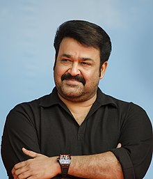

Mohanlal
Mohanlal | |
|---|---|
|  Mohanlal at Run Kerala Run event in 2015 | |
| Born | Mohanlal Viswanathan Nair 21 May 1960 |
| Other names | Lalettan |
| Alma mater | Mahatma Gandhi College |
| Occupation |
|
| Years active | 1978–present |
| Spouse(s) | Suchitra Mohanlal (m. 1988) |
| Children | 2, including Pranav Mohanlal |
| Relatives | K. Balaji (father-in-law) Suresh Balaje (brother-in-law) |
| Awards | See accolades |
| Honours | Padma Shri (2001) Lieutenant Colonel (honorary) (2009) Padma Bhushan (2019) |
| Website | www |
{kind=link}
Mohanlal Viswanathan Nair (born 21 May 1960), known mononymously as Mohanlal, is an Indian actor, film producer, playback singer, television host and film distributor who predominantly works in Malayalam cinema besides also having sporadically appeared in Tamil, Hindi, Telugu and Kannada-language films.[1][2][3] Mohanlal has a prolific career spanning over four decades, during which he has acted in more than 400 films.[2][4] Mohanlal's contributions to the Malayalam cinema have been praised by his contemporaries in the Indian film industry.[5][6][7] The Government of India honoured him with Padma Shri in 2001,[8] and Padma Bhushan in 2019, India's fourth and third highest civilian honours,[9] for his contributions to Indian cinema. In 2009, he became the first actor in India to be awarded the honorary rank of Lieutenant colonel in the Territorial Army.[10][11]
Mohanlal made his acting debut at age 18 in the Malayalam film Thiranottam in 1978, but the film was delayed in its release for 25 years due to censorship issues. His screen debut was in the 1980 romance film Manjil Virinja Pookkal, in which he played the antagonist.[12][13] He continued to do villainous roles and rose to secondary lead roles in the following years. By the mid-1980s, he established himself as a bankable leading actor and attained stardom after starring in several successful films in 1986; the crime drama Rajavinte Makan released that year heightened his stardom.[12] Mohanlal prefers to work in Malayalam films, but he has also appeared in some Hindi, Tamil, Telugu and Kannada films. Some of his best known non-Malayalam films include the Tamil political drama Iruvar (1997), the Hindi crime drama Company (2002) and the Telugu film Janatha Garage (2016).[14][15]
Mohanlal has won five National Film Awards—two Best Actor, a Special Jury Mention and a Special Jury Award for acting, and an award for Best Feature Film (as producer), also nine Kerala State Film Awards and Filmfare Awards South and numerous other accolades. He received honorary doctorates from Sree Sankaracharya University of Sanskrit in 2010[16] and the University of Calicut in 2018.[17]
Mohanlal is also known for his philanthropic endeavours. He founded the ViswaSanthi Foundation, a non-profit charitable organization that was started to create and deliver high-impact and focused programs to the underprivileged sections of society in the areas of Healthcare and Education.[18][19][20]
Early life
Mohanlal Viswanathan was born in the village of Elanthoor in the Pathanamthitta district, Kerala on 21 May 1960. He is the youngest child of Viswanathan Nair, a former bureaucrat and Law Secretary with the Kerala government, and Santhakumari.[21][22] He had an elder brother named Pyarelal (died in 2000, during a military exercise).[23] Mohanlal grew up in Mudavanmugal at his paternal home in Thiruvananthapuram. He studied at Government Model Boys Higher Secondary School, Thiruvananthapuram and graduated with a Bachelor of Commerce degree from Mahatma Gandhi College, Thiruvananthapuram.[24][25] Mohanlal's first role was as a sixth grader for a stage play called Computer Boy, in which he played a ninety-year-old man.[26]
During 1977 and 1978 he was the Kerala state wrestling champion.[27]
Film career
Early years (1978–85)
Mohanlal made his acting debut in 1978 with the film Thiranottam, which was produced and made by Mohanlal and his friends—Maniyanpilla Raju, Suresh Kumar, Unni, Priyadarshan, Ravi Kumar and a few others. Mohanlal played Kuttappan, a mentally disabled servant. Due to some issues with censorship, the film was not released on time. It took 25 years to release the film.[13]
In 1980, Mohanlal was cast in the lead antagonist role in Manjil Virinja Pookkal – the directorial debut of Fazil. The film became a major success.[28] Mohanlal's friends had sent his application in response to an advertisement released by Navodaya Studio.[29] He auditioned for the role in front of a panel that included professional directors. Displeased with his appearance, two of them gave him poor marks, but Fazil and Jijo Appachan gave him 90 and 95 marks out of 100.[30] In an interview with Reader's Digest in 2004, Mohanlal said that his looks as a young man might have fit the villain's image.[31]
By 1983, Mohanlal was credited in more than 25 feature films, most of them had him playing negative (villain) roles.[31] Films such as Ente Mohangal Poovaninju, Iniyengilum, Visa, Attakkalasham, Kaliyil Alpam Karyam, Ente Mamattukkuttiyammakku, Engane Nee Marakkum, Unaru and Sreekrishna Parunthu changed his image.[vague] Through Sasikumar's Ivide Thudangunnu, he became a successful hero with a "good heart". Mohanlal played his first comic lead role in an ensemble cast in the 1984 comedy Poochakkoru Mookkuthi, directed by Priyadarshan, as a young man in love with a girl whom he mistakenly believes to be rich.[32] It also marked the beginning of the Mohanlal-Priyadarshan duo, who as of 2016, have worked together in 44 films.[33]
In 1985, he recorded a song for the film Onnanam Kunnil Oradi Kunnil.[32] Uyarangalil, Nokketha Doorathu Kannum Nattu, Boeing Boeing and Aram + Aram = Kinnaram were some of his films in this period.
1986–2000
During this period, Mohanlal played very different roles in films "made by the great masters", such as G. Aravindan, Hariharan, M. T. Vasudevan Nair, Padmarajan, Bharathan and Lohithadas.[34] Mohanlal, along with actor and scriptwriter Sreenivasan, who played his sidekick in several films, showcased the angst of unemployed, educated Malayali youth forced to adapt to hostile environments in many realistic social satires,[35] some of which were written by Sreenivasan himself.[36]
In 1986, he starred in T. P. Balagopalan M.A., directed by Sathyan Anthikad, for which he received his first Kerala State Film Award for Best Actor.[37] He portrayed an unemployed young man who shoulders the responsibility of his family. His performance in Sanmanassullavarkku Samadhanam as a harassed house-owner won him the Filmfare Award for Best Actor (Malayalam) in the same year. Mohanlal was given the status of a new Malayalam superstar by the public after the box office success of Rajavinte Makan (1986), in which he played an underworld don, Vincent Gomez. He also starred in the tragedy Thalavattom, playing Vinod, a young man who becomes mentally ill upon witnessing his girlfriend's death. He played Solomon in Padmarajan's Namukku Parkkan Munthirithoppukal. Mohanlal's association with Padmarajan was very well noted because their films told stories that were well and truly ahead of their times and broke many conventional stereotypes prevailing during that time in the Malayalam film industry. In 1986 alone, Mohanlal appeared in 36 Malayalam films.[34]
The following year, Mohanlal starred with Sreenivasan and Shobana in the Sathyan Anthikad comedy Nadodikkattu, which became a box office success. Mohanlal and Sreenivasan reprised their roles as the detectives Dasan and Vijayan respectively in its sequels; Pattanapravesham (1988) and Akkare Akkare Akkare (1990). Thoovanathumbikal, directed by Padmarajan, in which he portrayed a person torn between his twin love interests, broke many stereotypes in Indian films,[35][38] such as, the leading man falling in love with a second woman immediately after he is rejected by the first, and of a man falling in love with a sex worker. The romantic comedy Chithram, released in 1988, played for 366 days in a theatre, becoming the longest-running Malayalam film.[32] Mohanlal won a Kerala State Special Jury Award in 1988 for his acting in Padamudra, Aryan, Vellanakalude Nadu, Ulsavapittennu and Chithram.[37]
In 1989, the combination of the writer Lohitha Das and director Sibi Malayil created the character Sethumadhavan, a person who dreams of becoming a police officer, but ends up as a criminal, in the tragedy Kireedam. The role earned Mohanlal a National Film Special Jury Mention.[32] Mohanlal later recalled that his portrayal of Sethumadhavan's mental agony, commended as a natural performance, was spontaneous and that he "did what Sethumadhavan, my character, would have done in such a situation", adding that acting was "akin to entering another person's body."[34] In the same year, he acted in a film which became a commercial success, Varavelpu, which tells the story of a man who earned money working in the Gulf and came back home to enjoy his life with his family. He bought a bus, which eventually gets him into trouble. The former Prime Minister of India, Atal Bihari Vajpayee, mentioned the film as an example of ignorance by Malayali towards global economic changes during the inauguration of the Global Investor Meet held at Kochi on 18 January 2003.[39][40] In 1989, he starred in another one of Padmarajan's movies; Season.
In the early 1990s, Mohanlal acted in a number of commercial films, such as His Highness Abdullah, Midhunam and No.20 Madras Mail. His Highness Abdullah was the first independent production of Mohanlal under his company Pranavam Arts International. Mohanlal appeared in Bharathan's Thazhvaram in 1990, as a widower seeking revenge for the murder of his wife by his most trusted friend. His romantic comedy Kilukkam in 1991 won him a State Film Award for Best Actor. The film is considered one of the greatest comedy films of all time in Malayalam. It also became the highest-grossing Malayalam film of the time. In 1991, Mohanlal produced and starred in Bharatham, which is interpreted as a modern-day adaptation of the Ramayana from Bharath's perspective. The film was a critical and commercial success, with his role as a Carnatic singer who is burdened by a jealous brother, earning him the National Film Award for Best Actor for that year.[41][42] His role in Bharatham was listed among the "25 Greatest Acting Performances of Indian cinema" by Forbes India on the occasion of celebrating 100 years of Indian Cinema.[43] He portrayed a Bharatanatyam dancer in Kamaladalam(1992). He took help from his choreographer and his co-actors and professional dancers Vineeth and Monisha for enacting the dance scenes.[34] Rajashilpi, Sadayam, Yoddha, and Vietnam Colony were his other films released in 1992. The drama Devaasuram (1993), written by Ranjith and directed by I. V. Sasi, was one of Mohanlal's most successful films and is regarded as a cult classic.[41]
In 1994, Mohanlal starred in the lead role as Dr. Sunny Joseph in the Fazil-directed cult classic Manichitrathazhu, as a psychiatrist. Spadikam was a 1995 work for which he won his third Kerala State Film Award for Best Actor and fifth Filmfare Award for Best Actor (Malayalam) for his portrayal of Thomas "Aadu Thoma" Chacko, a young man who becomes a thug, estranged from his father, upon failing to meet the latter's high expectations. In 1996, Mohanlal starred in Priyadarshan's Kaalapani, an epic film about the prisoners in the Cellular Jail of Port Blair and Lohithadas's Kanmadam (1998). He played the lead role in Guru, directed by Rajiv Anchal in 1997. The film was chosen as India's official entry to the Oscars to be considered for nomination in the Best Foreign Language Film category for 1997.
Mohanlal acted in his first non-Malayalam film in 1997, in the Tamil biographical film Iruvar, directed by Mani Ratnam.[44] The film, in which Mohanlal depicted an actor who turns to politics (based on the life of M. G. Ramachandran), was a critical success and won many awards including the Best Film award at the Belgrade International Film Festival and two National Film Awards.[45][46] In 1998, he produced and starred in Harikrishnans, co-starring Mammootty and Juhi Chawla. The film was a commercial success, but was not well received by critics.[47] The film had dual climaxes, which were screened in different regions, based on the popularity of the two lead actors in each particular region.[48] This, however, became controversial and took a communal turn when lawsuits were filed claiming that prints exhibited in Hindu-dominated areas showed Mohanlal marrying the heroine, whereas the ones in Muslim-dominated areas showed Mammootty marrying her. The major issue was that the film showed uncensored scenes, as the submitted cut of the film to the Central Board of Film Certification was the version in which Mohanlal wins the leading lady. Hence they were forced to remove the Mammootty version from theatres, replacing it with the original. However, in television premieres, both film versions were shown.[49]
Mohanlal depicted a Kathakali artist whose personal life is a tragedy in the 1999 Indo-French period drama Vanaprastham, produced by him and directed by Shaji N. Karun. It won him the second National Award for Best Actor and was the first film that got him international recognition by screening in various Film festivals. The film was selected for the competitive section at the Cannes Film Festival and his performance was critically acclaimed. It also earned him his fourth Kerala State Film Award for Best Actor, second National Film Award for Best Actor and sixth Filmfare Award for Best Actor (Malayalam).[31][50][51] Vanaprastham was nominated for the Grand Jury Prize at the AFI Fest.[52] Vanaprastham was screened in retrospective, during the 2014 International Film Festival of India in the 'Celebrating Dance in Indian Cinema' section.[53]
2000–09
{kind=link}
In 2000, Mohanlal starred in Narasimham, playing a rogue with a good heart.[54] It became the highest-grossing Malayalam film of all time.[55] In the next two years, Mohanlal was typecasted in similar larger-than-life action hero roles in films such as Ravanaprabhu (2001), Praja (2001), Onnaman (2002), Thandavam (2002) and Chathurangam (2002). Except for Ravanaprabhu, these films were widely criticised for their repetitive plots, lewd dialogues, punch lines and male chauvinistic outlook.[55][56][57] A critic from The New Indian Express wrote: "The Narasimham hangover is terrifically strong and it has, at least for the moment, killed the prospects of good films. I don't see any other reason for the failure of well made female-oriented films like Mazha and Madhuranombarakkattu".[55]
In 2002, Mohanlal played Sreenivasan IPS, a Mumbai police officer,[31] in his first Bollywood film Company, which introduced him to the Hindi-speaking audience in India and for which he won the International Indian Film Academy Awards (IIFA) and Star Screen Award for Best Supporting Actor.[58][59] The film dealt with the real-life story of two underworld dons who ruled Mumbai (played by Ajay Devgn and Vivek Oberoi). Mohanlal's performance was well received. The Hindu noted that the actor is "at his natural best" and "does not look stifled or anxious as other South Indian stars do when they appear in a Hindi movie for the first time".[60] In a 2010 online poll by Hindifilmnews.com, Mohanlal's performance in Company was chosen as "The Finest Performance of a Bollywood Actor in the Last Decade (2001–2010)". He was No. 1 in the audiences' list and maintained No. 6 in the critics' list.[61]
The following year, Mohanlal, trying to change his action hero image,[62] returned to comedic roles with Kilichundan Mampazham, Balettan, Hariharan Pillai Happy Aanu and Mr. Brahmachari. Kilichundan Mampazham, promoted as a comeback vehicle for the actor, received good reviews and a decent box office collection.[63][64] Balettan, directed by V. M. Vinu, was also a commercial success.[65] Mohanlal played Athanipparambil Balachandran, a bank employee always willing to lend a helping hand to others, who is forced to hide many secrets after his father's death leading to his family's mistrust.[66] In 2004, Natturajavu and Mambazhakkalam were his only successes.[67]
Mohanlal appeared in the 2005 black comedy Udayananu Tharam as an aspiring film director. It was well received by critics and performed well even in places where Malayalam films do not run in regular shows, such as Vadodara, Rajkot, Pune and Ahmedabad.[36] In the same year, he appeared in director Blessy's second film Thanmathra, a film that tells the story of an individual suffering from Alzheimer's disease. The film received positive reviews and Mohanlal's performance was highly praised by critics.[68] Mohanlal won his fifth Kerala State Film Award for Best Actor and seventh Filmfare Award for Best Actor for his performance. In the movie, his character does not speak in the second half.[68][69][70]
In 2006, he worked with director Sathyan Anthikkad in Rasathanthram, a family drama. Mohanlal also acted in Kirtichakra, by director Major Ravi, in which he plays an Indian Army officer, Major Mahadevan. The film was shot in Kashmir, and was a notable commercial success.[71] A dubbed Tamil version of the film was released in Tamil Nadu as Aran, but Mohanlal disassociated himself with the film since his voice was not used, stating that "I prefer to speak for my role in the film."[72] Mohanlal also acted in the sequels Kurukshetra (2008) and Kandahar (2010) in the Major Mahadevan series. In 2009, the Indian government conferred him with the honorary title of Lieutenant colonel in the Indian Territorial Army.[73]
In 2007, Mohanlal won the Kerala State Film Award for Best Actor for his performance in Paradesi, directed by P. T. Kunju Muhammed. Sify.com stated that "Mohanlal is mesmerising and reinvents the idiom of acting once more with feeling." His July release Hallo became one of the highest-grossing Malayalam films of the year.[74][75] In August that year, he appeared in his second Bollywood film Aag, (also called Ram Gopal Varma Ki Aag), a remake of the Bollywood classic Sholay (1975). Mohanlal reprised the role played by Sanjeev Kumar from the original.[76] In 2008, Mohanlal did the lead role in the multi-starrer blockbuster Twenty:20 and in 2009, he co-starred with Kamal Haasan in the Tamil film Unnaipol Oruvan. His last film of the year, Evidam Swargamanu, was directed by Rosshan Andrrews.
2010–present
{kind=link}
In 2010, he acted in five films, the first being Janakan, a crime thriller in which he co-starred with Suresh Gopi, written by S. N Swamy. In the film, he played Adv. Surya Narayanan encounters some runaway suspects as they approach him for justice. Alexander the Great, directed by Murali Nagavally was a comical racy entertainer released in May. Oru Naal Varum, directed by T. K Rajeev Kumar, scripted by Sreenivasan and produced by Maniyanpilla Raju, was a social satire about corruption in India. It reunited the much-adored classic combo of Mohanlal-Sreenivasan onscreen. His next film was Shikkar, a dark revenge thriller directed by M. Padmakumar, in which he played a lorry driver who is haunted by his past. The film topped at the Ramzan box office.[77] It was followed by Kandahar, a war film directed by Major Ravi, based on the hijacking of Indian Airlines Flight 814 in 1999. Mohanlal reprised the role of Major Mahadevan in the film. It was the third installment in the Major Mahadevan film series, and the debut Malayalam film of Amitabh Bachchan.
Mohanlal's first release in 2011 was the multi-starrer Christian Brothers, an action drama directed by Joshiy and scripted by Udayakrishna-Siby K. Thomas, in which he co-starred with Suresh Gopi, Dileep and Sarath Kumar. Released worldwide in March across 300 screens, which was the largest release for a Malayalam film at the time,[78] this racy film was a commercial success and one of the top grossing Malayalam films of the year.[79] His Vishu (April) release was China Town, another multi-starrer in which he co-starred with Jayaram and Dileep, which was a comedy film directed by Rafi Mecartin. Despite mixed reviews, the film ran over 100 days and became one of the highest grossing Malayalam films of the year.[80] He starred in Pranayam, released in August, an off-beat romantic drama directed by Blessy. It was a love story between three aged characters played by Mohanlal, Anupam Kher and Jayapradha. The film was highly acclaimed by critics and Mohanlal's performance as Mathews was well appreciated.[81] His next film Snehaveedu, was directed by Sathyan Anthikkadu,[82] a family film in the background of a village in Palakkad. For the first time, yesteryear actress Sheela shared screen space with Mohanlal. She played his mother. Snehaveedu is credited as his 300th film.[83] The film was a hit.[84] His last movie that year was Oru Marubhoomikkadha, directed by Priyadarshan, which was an action-comedy thriller entirely set in the Middle East. It marked the return of the Priyadarshan-Mohanlal-Mukesh combo of the late 1980s and 90s. The film performed well at the Christmas-New Year's box office.[85]
In 2012, he acted in six films. His first release was the much hyped big-budget romantic thriller film Casanovva, directed by Rosshan Andrrews and written by Bobby-Sanjay. He enacted the role of Casanova, a serial womaniser and the owner of Casanova's Eternal Spring – an international chain of flower boutiques. Later, he appeared in a cameo role in the Bollywood movie Tezz, which was released in April and directed by Priyadarshan. His next film was the B. Unnikrishnan-directorial Grandmaster, a neo-noir crime thriller about a cop who is forced to investigate a series of murders. Mohanlal's well-tempered, calm and subdued acting was appreciated by the critics.[86] Produced by UTV Motion Pictures, it was the first Malayalam film to be released through Netflix, and made available in the United States and Canada.[87] Spirit, directed by Ranjith, talked about the increasing habit of alcoholism in Kerala. The film was exempted from the entertainment tax by the state government for creating social awareness in the society.[88] The film completed a 125-day theatrical run in Kerala and became a commercial success.[89] Run Baby Run, released during the Onam festival, was a comedy thriller directed by Joshiy. It featured the news media as the background. The film was well appreciated by critics, remarking that it was as an example of a well-crafted thriller.[90] It became one of the highest-grossing Malayalam films of the year.[91] The year ended with the Christmas release Karmayodha, directed by Major Ravi, an action thriller in which he played Mad Maddy, an encounter specialist who is assigned to investigate the disappearance of a teenage school girl in Mumbai. The film dealt with the discrimination against women.
{kind=link}
2013 was a remarkable year for Mohanlal, it was the year in which the all-time blockbuster of Malayalam film, Drishyam released. His first film of the year was Lokpal, a vigilante thriller in which he played a vigilante nicknamed "Lokpal". It was directed by Joshiy and written by S. N. Swamy. Red Wine, directed by Salam Bappu, was a non-linear investigation thriller based on a political murder. Ladies and Gentleman, directed by Siddique, was a romantic comedy film set in the backdrop of IT companies. Geethaanjali, a horror thriller directed by Priyadarsan, was a spin-off of the Malayalam classic film Manichitrathazhu, in which he reprised the role of Dr. Sunny from the original. His last release was Drishyam, directed by Jeethu Joseph. It grossed ₹75 crore worldwide and became the highest-grossing Malayalam film ever, until 2016.[92]
In 2014, he starred in the Tamil action-drama Jilla, alongside Vijay, directed by R. T. Neason and produced by R. B. Choudary.[93][94] The film was a commercial success, grossing over ₹85 crore worldwide,[95] and completed 100 days theatrical run in Chennai, Tamil Nadu.[96] Mohanlal's first Malayalam release of 2014 was Mr. Fraud, a heist film directed by B. Unnikrishnan. He appeared in an extended cameo role in his next film Koothara, directed by Srinath Rajendran, a coming-of-age mystery film set in an untold period. He played a mysterious character in the experimental film, who at the end of the film revealed himself as a merman. His next was the comical political satire film Peruchazhi, written and directed by Arun Vaidyanathan. He played a young political kingmaker who is assigned to make a candidate for governor win the California state gubernatorial elections, where he uses standard Indian political gimmicks to win the election in the USA.
In 2015, his first release was the Kannada film Mythri. His performance as the revenge-seeking DRDO (Defence Research and Development Organisation) scientist Mahadev was well appreciated by the critics. His first Malayalam release was with a cameo appearance in Rasam. Ennum Eppozhum, directed by Sathyan Anthikad was his first leading role in the year, co-starring Manju Warrier. The film was a success at the box office. It was followed by the action thriller Lailaa O Lailaa, directed by Joshiy, both of which failed critically and commercially at the box office. His next was the Ranjith directorial thriller Loham. Though it met with mixed critical reactions, the film was a commercial success and grossed ₹15 crore at the box office.[97] The revenge thriller Kanal was his last in the year. It also received mixed reviews from critics.
{kind=link}
In 2016, Mohanlal had four releases, which had a combined gross collection of ₹378 crore worldwide, making him fourth (behind Aamir Khan, Akshay Kumar, and Salman Khan) among the top Indian actors with highest box office receipts in the year, and in top position among South Indian actors.[98] His first release in the year was the Telugu film Manamantha, a family drama directed by Chandra Sekhar Yeleti. His following release was another Telugu film Janatha Garage, an action drama directed by Koratala Siva. It became the highest-grossing Telugu film of 2016 and one of the highest-grossing Telugu films ever,[99] with a gross collection of over ₹135 crores worldwide.[100] His first Malayalam release that year was the Priyadarshan-directed crime-thriller Oppam, in which he played a blind man. The film became the highest-grossing Malayalam film of 2016 within its first 2 weeks of theatrical run.[101] It crossed the ₹50 crore mark at the box office within one-and-a-half months,[102] and grossed over ₹65 crore worldwide.[103] He acted as a hunter in his following release, the action film Pulimurugan. It became the highest-grossing Malayalam film ever and is the first Malayalam film to gross over ₹100 crore at the box office.[104] The film has so far collected ₹152 crore worldwide. The next year, he acted in another ₹50 crore film; Munthirivallikal Thalirkkumbol.[98] The next film he acted in was 1971: Beyond Borders directed by Major Ravi. It was a film based on the 1971 India-Pakistan war. The next film he acted in was Velipadinte Pusthakam directed by Lal Jose. It was the first film of Mohanlal-Laljose combo. It was followed by Villain directed by B. Unnikrishnan. Villain was an emotional thriller. Next year he acted in fantasy drama film Odiyan, directed by V. A. Shrikumar Menon. The film was written by Harikrishnan; it is based on the legend of the Odiyan clan. The next film he acted in was Lucifer (film) directed by Prithviraj Sukumaran and written by Murali Gopy which grossed ₹175 crore at the box office[105] It is currently the highest earned Malayalam movie, grossing over ₹200 crore, which includes box office collections and the earnings from the sale of its satellite rights, digital streaming rights and TV rights in other languages.[106]
Mohanlal's period drama film Marakkar: Arabikadalinte Simham, directed by Priyadarshan won the best feature film award in 67th National Award for the year 2019. The film released on December 2, 2021, in theatres.[107]
Mohanlal starred in thriller film Drishyam 2, directed by Jeethu Joseph. The film released in February 2021, also stars Meena, Ansiba Hassan and Esther Anil.[108]
He starred in Aaraattu a mass masala entertainer produced and directed by B. Unnikrishnan, which released in theatres on 18 February 2022.[109]
Other projects
Stage performances
{kind=link}
Mohanlal had acted in several amateur plays before entering into films. In 2001, he debuted in professional drama playing Karna (a character from the Indian epic Mahabharata) in Karnabharam, a Sanskrit-language play directed by Kavalam Narayana Panicker. It premiered at the Siri Fort Auditorium in New Delhi on 29 March 2001 as part of the National Theatre Festival of the National School of Drama. The play depicts Karna's mental agony a day before the Kurukshetra War, as he thinks about his past and his faith. Mohanlal said: "You cannot compare Kavalam's play with the amateur plays I did. Though there are other characters in the play, the theme revolves around Karna. It is almost like a solo performance. Some of the scenes are really touching and challenging".[110] He acted without payment, saying: "I performed for the joy of it ... for my love of our history".[31]
Kadhayattam was a presentation enacted by Mohanlal, performing ten classic characters and situations from Malayalam literature, selected from ten Malayalam novels written by O. Chandu Menon, C. V. Raman Pillai, S. K. Pottekkatt, Thakazhi Sivasankara Pillai, P. Kesavadev, Vaikom Muhammad Basheer, Uroob, O. V. Vijayan, M. Mukundan, and M. T. Vasudevan Nair over a 100-year period. The play, directed by T. K. Rajeev Kumar premiered at the Senate Hall of University of Kerala on 1 November 2003, and later was staged in Kozhikode, Bangalore, Chennai and Delhi.[111][112] In 2008, Mohanlal along with Mukesh performed in Chayamukhi, written and directed by Prasanth Narayanan. Mohanlal and Mukesh portrayed Bheeman and Keechakan respectively, the characters from Mahabharata. It had a play within a play narrative style. It premiered at the Lulu International Convention Centre in Thrissur on 12 March 2008,[113] and later was staged in Thiruvananthapuram, Bangalore, Kollam, Kochi, and Kozhikode. A critic from The Hindu wrote: "Chayamukhi is, arguably, the finest work on Malayalam stage in recent times".[114] In the same year, Mohanlal voiced Hanuman in the English ballet Maya Ravan, directed by Shobana.[115]
In 2014, Mohanlal and musician Ratheesh Vegha formed the music band Lalisom - The Lal Effect.[116] Its maiden show was at the 2015 National Games of India. The band drew flak from social media initially for charging an amount of ₹1.63 crore and later for lip-syncing.[117] Following the criticism, Mohanlal returned the amount to the government, which they refused stating that the government's morality would not allow them to take back the money and Mohanlal had not personally benefited from the amount which he received, since it was meant to meet the stage expenses and remuneration for the artistes.[118] Despite that, Mohanlal did not take back the money he dispatched.[119]
In 2015, he collaborated once again with Mukesh for Naga, but this time as the narrator. The play, based on Girish Karnad's Kannada play Nagamandala, was directed by Suveeran. Naga was a combination of myth, superstition, fact, and fantasy. It was premiered at the Parish Hall of St. George Church, Kalady on 9 August 2015.[120]
Goodwill and brand ambassador
Mohanlal has been a goodwill ambassador for the government and other nonprofit organisations, mainly for public service ads and humanitarian causes. In March 2007, he was made the goodwill ambassador of the AIDS awareness campaign by Kerala AIDS Control Society, for which he acted in short awareness videos.[121] In October 2009, Mohanlal was appointed as the goodwill ambassador of Kerala State Athletics by the Kerala State Athletics Association.[122] In March 2010, Mohanlal accepted the plea of the Department of Industries and Commerce of the Government of Kerala to be designated as the goodwill ambassador of Kerala's handloom industries.[123] In July 2015, the Government of Kerala made him the Goodwill ambassador of "Subhayatra 2015", a project developed to create awareness about traffic rules.[124] He was appointed as the Goodwill ambassador of "Mrithasanjeevani" in September 2016, another project by the Government of Kerala aimed at promoting organ donation in the state.[125] In January 2021, he was appointed as the goodwill ambassador of the tuberculosis eradication campaign by the Kerala government's health department.[126]
He has also appeared in several television commercials and advertisements for Malabar Gold and Diamonds, Oceanus etc.[127] Mohanlal was the first movie star in India to endorse the ubiquitous dhoti after he was made the brand ambassador of MCR in 2001. MCR manufactured 30,000 coloured dhotis which had been featured in the film Narasimham (2000), which was a market success. He continues to be the chief brand ambassador of MCR.[128] Mohanlal signed as the brand ambassador of Kanan Devan in 2002, a tea brand owned by the Tata Global Beverages. His contract was renewed after its rebranding in 2014.[129] In July 2010, LG Electronics India enlisted Mohanlal for the endorsement of the brand's Onam festival offers for Kerala customers lasting till September 2010.[130] In the same year, he was signed as the brand ambassador in the state for Manappuram Finance Ltd., a non-banking financial company.[131] Mohanlal endorsed the coconut oil brand KLF Coconad in 2013.[132]
In September 2013, the direct-broadcast satellite television provider Tata Sky announced Mohanlal as its brand endorser for its Kerala market.[133] Mohanlal, along with Milkha Singh and P. T. Usha were the brand ambassadors of the event Kochi International Half Marathon in 2013, a half marathon organised by Kochi Municipal Corporation and Push Integrated Communication Pvt Ltd.,[134] He continued in its second edition in 2014, along with cricketer Harbhajan Singh.[135] In May 2016, as part of expanding its market to the South Indian audience, the entertainment company Hotstar, which is a platform for streaming media and video on demand, announced Mohanlal as its brand ambassador for its Malayalam contents. He endorsed its six-week multimedia campaign on television, print, outdoor and digital medias.[136][137]
Business and other ventures
{kind=link}
Mohanlal has started and associated with several business ventures related to film production and distribution, restaurants and packaged spices among others. He co-owned a production company during the 1980s, Casino, along with Mammootty, I.V. Sasi, Seema and Century Kochumon. The production house produced commercially successful films such as Nadodikkattu, Gandhi Nagar 2nd Street, Adiyozhukkukal and Karimpin Poovinakkare.[138] He owns Maxlab Cinemas and Entertainments, a film distribution company. He started Vismayas Max, a film pre and post-production studio headquartered in Trivandrum and a college for dubbing artists at KINFRA Film and Video Park, Trivandrum. The company's management was later taken over by Sohan Roy of Aries Group, which has now been renamed as Aries Vismayas Max. Mohanlal continues to be its brand ambassador. He has produced films under the production house Pranavam Arts International.[139]
He owns restaurants in India and overseas, including a chain in Dubai called Mohanlal's Tastebuds, established in 2002, and a spices, pickles, condiments, and curry powder brand with the same name launched in February 2004 in the Middle East. From 2007, the Eastern Group owns the majority stake in the brand.[140] In 2006, he opened a seafood restaurant named The Harbour Market in Bangalore,[141] and a hotel named Travancore Court in Ernakulam.[142] His other business ventures include Uniroyal Marine Exports Limited – a Kozhikode-based seafood export company, where he is a non-executive director since 1992.[143] He is the co-founder, partner and chairman of Jose Thomas Performing Arts Centre (JTPac) in Thrippunithura, Kochi, an arts centre for performing arts and music established in 2009.[144] He is an independent director of Clenergen India Private Limited, a company for production and supply of biomass feedstock for biomass gasification.[145]
In 2009, Mohanlal, along with Priyadarshan, tried to bid for an Indian Premier League (IPL) cricket team based in Kochi; they withdrew the bid on failing to source enough funds after a change in rules was introduced.[122][146] Mohanlal was the captain of the Kerala Strikers team in the Celebrity Cricket League (CCL) held in 2012 and 2013.
Escape art
In 2008, Mohanlal secretly underwent 18 months of escape artist training under famous magician Gopinath Muthukad.[147] He had planned to perform a stunt called "Burning Illusion" in Thiruvananthapuram. However, due to pressure from various quarters including his fans, the act was cancelled later on criticisms and allegations that it is extremely dangerous. The event was jointly organised by the Kerala Police, State Tourism Department and the Kerala State Youth Welfare Board. The open-air "fire escape" stunt, which should have been held at the Chandrasekharan Nair Stadium, was a curtain-raiser for the four-day "Vismayam 2008", an international convention in which nearly 1,000 magicians from across the world took part. The meet started on 1 May. In the stunt, he was to be handcuffed and the whole body wrapped in chains with the keys in the hands of dignitaries watching the show. The actor would then be put inside a box, which would be then thrown into a ball of fire from where he had to escape.[148]
The news shocked and split the magician community in Kerala. Before the commencement of the act, the internationally acclaimed magician Samraj advised Mohanlal against performing the stunt. Samraj approached the Association of Malayalam Movie Artists (AMMA) with a memorandum signed by 300 magicians, requesting it to urge Mohanlal to withdraw from the performance.[149] AMMA president and actor Innocent, requested that Mohanlal withdraw from the stunt to avoid endangering himself. He said: "Mohanlal is a pillar of the Malayalam film industry; he has no right to go and do such a risky show".[150] The stunt was also to inspire the youth to overcome debacles in life with sheer determination. Briefing about the act in the press conference organised in Trivandrum, Mohanlal said: "The risk factor is fifty-fifty for the escape act. I hope that I can make it with the blessings of all".[151] About the objective of the act, the Merlin Award-winning magician Gopinath Muthukad said: "Counted as one of the most dangerous acts, the "Burning Illusion" will find Mohanlal inspiring the youth to overcome debacles in life with sheer determination. He has been practising for a while to perfect it".[152]
In 2014, the actor decided to perform a risk-free item for the inaugural function of Magic Planet, a magic-themed complex at Kinfra Film and Video Park in Kazhakoottam, Trivandrum. It was a project of the Academy of Magical Sciences, founded by his teacher, the internationally acclaimed magician Gopinath Muthukad. The function was inaugurated by the then sitting Chief Minister of Kerala Oommen Chandy and the first magic performance was done by Mohanlal. In the trick, he lifted a girl on air. Opposition Leader V. S. Achuthanandan along with other supreme leaders and high-profile international magicians were present at the function.[153]
In the media
{kind=link}
Mohanlal has been described in the Indian media as one of the most versatile actors and has been lauded for his natural acting style.[41][69][154][155][156] Mohanlal is also known by his pet name "Lalettan".[157] Reader's Digest India described him in 2004 as "cinema's jack of all trades and master of many".[31] He was also listed 80th in India's Most Trusted Persons, in a survey conducted by Reader's Digest in 2010.[158] Director Ram Gopal Varma has described Mohanlal as "one of the finest actors in the country who can slip into any role easily".[159]
In 2003, on the 25th anniversary of Mohanlal's film career, a week-long celebration and a stage show were held in Thiruvananthapuram, by his fans and friends. The proceeds from the stage show were donated to charity.[160] Malayalam television channels Asianet and Surya TV also held separate stage shows to celebrate the anniversary.[161]
Mohanlal has often been accused in the media of causing a crisis in Malayalam cinema due to the "superstar" effect.[162] In 2005, 95 percent of box-office gross in Malayalam cinema came from Mohanlal, Mammootty, and Dileep films. He had been criticized for the high remuneration, preference for formulaic content and larger-than-life male-oriented roles that characterized most of his movies during that period.[163][164] Mohanlal's many fan clubs which are present throughout Kerala help in creating a buzz around new releases and ensure a good opening in movie screens, a crucial factor to the success of films in Kerala.[165]
In 2007, some social activists protested against Mohanlal for appearing in a whisky commercial, to which he responded that it is unfair to single him out when so many other Indian actors do the same.[166] In 2010, during a public spat between actor Thilakan and the Association of Malayalam Movie Artists (AMMA) regarding a labour issue, social critic Sukumar Azhikode supported Thilakan and criticized leading Malayalam stars, urging them to step aside since they are old, especially mentioning Mohanlal, that he is "a hypocrite who hid his advancing age to act with younger heroines". Mohanlal responded that Azhikode might be having "hallucinations" and is ignoring it as a joke. This led to further personal remarks by Azhikode against Mohanlal.[127][167] The two later sorted things out. Azhikode watched Mohanlal's Pranayam in the theatre and praised his performance, Mohanlal also visited him on his death bed in 2012.[168][169]
The forest department filed a case against Mohanlal for keeping an elephant tusk at his home, under the Wildlife Protection Act, 1972.[170] The case was first dismissed by a local Court in Perumbavoor and later by the High Court of Kerala in 2012. An individual from Thrissur filed a petition that the officials had gone out of the way to favour Mohanlal. It was alleged in the petition that the actor and former minister K. B. Ganesh Kumar and forest officials were trying to save Mohanlal and overthrow the case related to the discovery of four elephant tusks at the actor's house during an income tax raid. The petitioner went to Kerala HC, but the Court dismissed the case and observed that "there was nothing to show that the State government or its officers had acted in favour of the actor. Besides, the petitioner had not been able to point out any illegality or irregularities in the investigation."[171][172] "Mohanlal's lawyer senior advocate M. K. Damodaran informed the court that police are investigating the case and the final report has not yet been submitted. When the lawyer of the plaintiff mentioned that the tusks are still kept in his house, the defendant's lawyer explained that a receipt for the tusks has been obtained and is kept with Mohanlal".[173] Dismissing the petition, the court criticized the petitioner for approaching the High Court even without inquiring about the present status of the case. "There is no public interest in the petition, but it is aimed only at publicity", the court had held.[172]
Personal life
Mohanlal married Suchitra, daughter of the Tamil film producer K. Balaji, on 28 April 1988.[174] The couple has two children – Pranav Mohanlal and Vismaya Mohanlal. Pranav has acted in a few films, debuting in Mohanlal's Onnaman (2001).[175] Mohanlal did not object when his son expressed a desire to act, as "kids may have many such ambitions. If we can help them realise something, what is the problem?."[175] He resides in Kochi, where he owns houses at Thevara[176] as well as Elamakkara.[177] He also owns houses in Chennai, his hometown Thiruvananthapuram, Ooty,[178] Mahabalipuram, a villa in Arabian Ranches and a flat in the Burj Khalifa at Dubai.[179] Mohanlal is a self-described foodie.[180] He also enjoys melodious music. Mohanlal is a strong believer in destiny and spirituality. He describes himself as a religious and spiritual person,[181] and likes to read Osho, J. Krishnamurti, Aurobindo and Ramana Maharshi. He has often stated that the turn of events in his life, including his film career, was accidental.
In August 2021, Mohanlal received United Arab Emirates's golden visa.[182]
Filmography and discography
Mohanlal's career spans four decades, during which he has acted in over 340 films and produced or co-produced films under three production houses—Casino Films, Cheers Films, and Pranavam Arts International. He works predominantly in Malayalam cinema, his acting credits also include some Bollywood, Tamil, Telugu and Kannada films. Mohanlal has occasionally acted in some professional plays and has also appeared in a few short films. He has recorded over 31 songs, most of them for the films in which he has acted. In television, Mohanlal hosted the reality show the first season of Bigg Boss (2018) on Asianet, the second season of Bigg Boss (2020), the third season of Bigg Boss (2021) and the fourth season of Bigg Boss (2022).
Accolades
{kind=link}
In a career spanning near forty years, Mohanlal has received numerous accolades and honours both competitive and honorary, among them are five National Film Awards, nine Kerala State Film Awards and Filmfare Awards South. The Government of India honoured him with Padma Shri, India's fourth-highest civilian honour in 2001 and Padma Bhushan, the third-highest civilian honour in 2019,[9] for his contributions to the arts. He was conferred with honorary Doctor of Letters by Sree Sankaracharya University of Sanskrit in 2010,[16][183] and the University of Calicut in 2018.[184]
In 2008, while filming for Kurukshetra, in which he plays an Indian Army officer, Mohanlal expressed his interest to join the Territorial Army of India. But he could not, as men above the age of 42 are not eligible to join the volunteer force.[185] On 9 July 2008, he was formally inducted to the Territorial Army in the honorary rank of Lieutenant Colonel by then Army Chief Deepak Kapoor. He is the first actor to receive the honour.[186][187] In 2012, he was bestowed with an honorary title of Black belt in Taekwondo from Kukkiwon, South Korea. He is the first South Indian actor to be honoured with the title.[27][188]
References
- ^ Kumar, P. k Ajith (21 May 2020). "On Mohanlal's 60th birthday, remembering 10 of his finest performances". The Hindu. ISSN 0971-751X. Archived from the original on 12 June 2020. Retrieved 28 August 2020.
- ^ Jump up to: a b Kumar, P. k Ajith (20 May 2020). "Mohanlal at 60: An actor par excellence". The Hindu. ISSN 0971-751X. Archived from the original on 19 June 2020. Retrieved 28 August 2020.
- ^ Desk, India com Entertainment (21 May 2020). "Happy Birthday, Mohanlal: 11 Lesser-Known And Interesting Facts About The Top Malayalam Star". India News, Breaking News, Entertainment News | India.com. Archived from the original on 9 June 2020. Retrieved 28 August 2020.
- ^ "'The complete actor' is not just a sobriquet, but Mohanlal's legacy". The Indian Express. 21 May 2022. Retrieved 21 May 2022.
- ^ "Mohanlal is India's pride, Kerala's treasure: Vijay to Dhanush, best quotes by Tamil actors on the Malayalam superstar. Rajinikanth, Suriya and more..." The New Indian Express. Retrieved 7 September 2021.
- ^ "Mohanlal is the greatest actor we have in our country: Suriya on his 'Kaappaan' co-star". The New Indian Express. Retrieved 2 July 2021.
- ^ "My admiration increases: Amitabh Bachchan after watching the trailer of Mohanlal's Marakkar - Times of India". The Times of India. Retrieved 2 July 2021.
- ^ "Padma Awards" (PDF). Ministry of Home Affairs, Government of India. 2015. Archived from the original (PDF) on 15 October 2015. Retrieved 21 July 2015.
- ^ Jump up to: a b "Mohanlal conferred with Padma Bhushan". The New Indian Express. 25 January 2019. Archived from the original on 26 January 2019. Retrieved 25 January 2019.
- ^ "Malayalam superstar Mohanlal joins Territorial Army". Hindustan Times. 9 July 2009. Retrieved 25 July 2021.
- ^ "Mohanlal enters Territorial Army training unit". The New Indian Express. Retrieved 25 July 2021.
- ^ Jump up to: a b Warrier, Shobha. "25 years, 25 landmarks". Rediff.com. Archived from the original on 21 July 2020. Retrieved 21 July 2020.
- ^ Jump up to: a b "I have nothing to prove in Bollywood: Mohanlal". Deccan Herald. Press Trust of India. 17 April 2012. Archived from the original on 13 January 2017. Retrieved 11 January 2017.
- ^ Khan, Ujala Ali (14 September 2013). "Reigning southern stars". The National. Archived from the original on 13 January 2017. Retrieved 11 January 2017.
- ^ Rajpal, Roktim (21 May 2015). "Mohanlal turns 55: 8 performances that prove he is the most bankable, successful star of Indian cinema". News18. Archived from the original on 13 January 2017. Retrieved 11 January 2017.
- ^ Jump up to: a b "Mohanlal, Pookutty get D.Litt". The Hindu. Chennai, India. 17 March 2010. Archived from the original on 11 June 2010. Retrieved 18 May 2010.
- ^ "Calicut University confers D.Litt on Mohanlal, P.T.Usha". Business Standard India. 29 January 2018. Archived from the original on 29 January 2018. Retrieved 29 January 2018.
- ^ Express News Service (26 April 2020). "Mohanlal donates robot for fighting Covid-19". The New Indian Express. Archived from the original on 21 July 2020. Retrieved 21 July 2020.
- ^ "ViswaSanthi Foundation". www.viswasanthifoundation.com. Retrieved 16 July 2021.
- ^ "Mohanlal launches project to raise aid for children's heart surgeries". Mathrubhumi. 6 August 2019. Archived from the original on 21 July 2020. Retrieved 21 July 2020.
- ^ Mohanlal Birth Place Archived 25 April 2017 at the Wayback Machine. Manoramaonline.com (22 April 2017). Retrieved on 2017-07-24.
- ^ NDTV Food Desk (21 May 2017). "Happy Birthday Mohanlal: The South Indian Superstar's Health Mantra". NDTV. Archived from the original on 23 December 2017. Retrieved 23 December 2017.
- ^ Lalettan – The most versatile and iconic figure in Indian cinema Archived 3 September 2010 at the Wayback Machine. Manorama Online (28 April 1988). Retrieved on 6 May 2012.
- ^ Entertainment, Art &. "Mohanlal Biography". LIFESTYLE LOUNGE. iloveindia.com. Archived from the original on 21 October 2014. Retrieved 5 January 2015.
- ^ .com, Mohanlalonline. "LAL'S BIOGRAPHY". Mohanlalonline.com. Archived from the original on 5 January 2015. Retrieved 5 January 2015.
- ^ "Kerala / Thiruvananthapuram News : Centenary celebrations of Model School inaugurated". The Hindu. Chennai, India. 25 May 2009. Archived from the original on 30 May 2009. Retrieved 12 September 2013.
- ^ Jump up to: a b Prakash, Asha (25 October 2012). "After SRK, Mohanlal to get a Taekwondo blackbelt". The Times of India. Archived from the original on 4 February 2016. Retrieved 6 October 2014.
- ^ Maya, M. (24 September 2003). "Destiny made me an actor: Mohanlal". The Times of India. Archived from the original on 30 November 2016. Retrieved 30 September 2003.
- ^ Mathrubhumi (23 February 2011). "മഞ്ഞിൽ വിരിയുന്ന ഓർമ്മകൾ..." [Remembrance Bloomed in the Mist]. Mathrubhumi (in Malayalam). Archived from the original on 15 November 2016. Retrieved 6 May 2012.
- ^ Manmadhan, Prema (23 December 2005). "His experiments with cinema". The Hindu. Archived from the original on 30 November 2016. Retrieved 3 March 2011.
- ^ Jump up to: a b c d e f Sivanand, Mohan (July 2004). "You Cool Cat". Reader's Digest. Archived from the original on 23 May 2006. Retrieved 19 April 2010.
- ^ Jump up to: a b c d Warrior, Shobha (3 September 2003). "25 years, 25 landmarks". Rediff.com. Archived from the original on 30 November 2016. Retrieved 3 March 2011.
- ^ "Priyan-Mohanlal back after eight years for a comedy". Deccan Herald. Indo-Asian News Service. 27 February 2011. Archived from the original on 30 November 2016. Retrieved 6 May 2012.
- ^ Jump up to: a b c d Kumar, P. K. Ajith (27 July 2007). "Acting is a bit like meditation". The Hindu. Archived from the original on 4 December 2016. Retrieved 27 July 2007.
- ^ Jump up to: a b B., Viju (14 January 2007). "Too bad if you don't know this man". The Times of India. Archived from the original on 20 January 2011. Retrieved 20 January 2008.
- ^ Jump up to: a b Pillai, Sreedhar (20 May 2005). "The Mohanlal effect". The Hindu. Archived from the original on 4 December 2016. Retrieved 22 May 2009.
- ^ Jump up to: a b "State Film Awards (1986)". Department of Information and Public Relations. Archived from the original on 19 November 2009. Retrieved 6 May 2012.
- ^ "Mohanlal, still raring to go at 53". NDTV. 21 May 2013. Archived from the original on 4 December 2016. Retrieved 21 May 2013.
- ^ Press Trust of India (18 January 2003). "Kerala ignores global economic changes: PM". Rediff.com. Archived from the original on 4 December 2016. Retrieved 20 January 2008.
- ^ "PIB Press Releases: Prime Minister Inaugurates Global Investors Meet" (Press release). Kochi: Press Information Bureau. 18 January 2003. Archived from the original on 4 December 2016. Retrieved 18 January 2003.
- ^ Jump up to: a b c "Malayalam cinema's invincible star turns 51". NDTV Good Times. 21 May 2011. Archived from the original on 1 April 2012. Retrieved 6 May 2012.
- ^ Warrier, Shobha (22 August 1997). "An interview with Lohitadas, director of the Malayalam film, Bhoothakkannadi". Rediff.com. Archived from the original on 20 February 2016. Retrieved 24 January 2016.
- ^ Prasad, Shishir; Ramanath, N. S.; Mitter, Sohini (27 April 2013). "25 Greatest Acting Performances of Indian Cinema". Forbes India. Archived from the original on 28 October 2014. Retrieved 11 January 2017.
- ^ Chand, Fakir (7 December 2002). "Ash's Hollywood debut in mid-2003". Rediff.com. Archived from the original on 4 December 2016. Retrieved 6 May 2012.
- ^ "Censors refer Iruvar to home dept". The Times of India. 28 February 1997. Archived from the original on 5 April 2012. Retrieved 6 May 2012.
- ^ Srinivasan, Pavithra (9 June 2010). "Looking at Mani Ratnam's landmark movies". Rediff.com. Archived from the original on 4 December 2016. Retrieved 6 May 2012.
- ^ Warrier, Shobha (11 March 1999). "Nothing, neither criticism nor compliment, affects me". Rediff.com. Archived from the original on 4 December 2016. Retrieved 6 May 2012.
- ^ Jose, D. (14 September 1998). "The win-win situation". Rediff.com. Archived from the original on 4 December 2016. Retrieved 6 May 2012.
- ^ Jose, D. (6 October 1998). "Double trouble". Rediff.com. Archived from the original on 4 December 2016. Retrieved 6 May 2012.
- ^ Narasimham, M. L. (28 July 2000). "Accolades are a norm". The Hindu. Archived from the original on 4 December 2016. Retrieved 6 May 2012.
- ^ Santhosh, K. (14 July 2000). "On a winning spree". The Hindu. Archived from the original on 4 December 2016. Retrieved 6 May 2012.
- ^ Philip, Benson (13 May 2016). "Must Watch International Award Winning Malayalam Films". The Times of India. Archived from the original on 13 January 2017. Retrieved 11 January 2017.
- ^ "Indian Cinema Catalogue 2014" (PDF). International Film Festival of India. 20 November 2014. Archived from the original (PDF) on 16 March 2016. Retrieved 16 September 2016.
- ^ Krishnankumar, R. (22 July 2000). "Greasepaint, and beyond". Frontline. Archived from the original on 4 December 2016. Retrieved 20 March 2008.
- ^ Jump up to: a b c Ayyappan, R. (24 January 2001). "Sleaze time, folks!". Rediff.com. Archived from the original on 4 December 2016. Retrieved 3 March 2011.
- ^ Moviebuzz (16 August 2002). "Thandavam". Sify. Archived from the original on 4 December 2016. Retrieved 6 May 2012.
- ^ Moviebuzz (24 December 2001). "Praja". Sify. Archived from the original on 4 December 2016. Retrieved 6 May 2012.
- ^ Nagarajan, Saraswathy (9 June 2006). "Bold themes, different roles". The Hindu. Archived from the original on 4 December 2016. Retrieved 3 March 2011.
- ^ "Stars arrive at IIFA awards". BBC. Retrieved 3 March 2011.
- ^ Palicha, Paresh C. (22 April 2002). "Mohanlal at ease in Company". The Hindu. Archived from the original on 4 December 2016. Retrieved 20 April 2009.
- ^ "Poll-5: The Finest Performance of a Bollywood Actor in the Last Decade (2001–2010)". Hindifilmnews.com. Archived from the original on 27 June 2013. Retrieved 21 December 2012.
- ^ "Superstars running scared?". The Hindu. 28 November 2002. Archived from the original on 4 December 2016. Retrieved 22 May 2009.
- ^ Pillai, Sreedhar (28 April 2003). "Box-office update". The Hindu. Archived from the original on 4 December 2016. Retrieved 24 April 2010.
- ^ "Kilichundan Mambazham". Sify. Archived from the original on 4 December 2016. Retrieved 6 May 2012.
- ^ Venkatraman, Latha; Radhakrishnan, Sankar (1 January 2004). "Tinsel world sees a bright picture". The Hindu Business Line. Archived from the original on 7 March 2010. Retrieved 6 May 2012.
- ^ Abhijath; Ram (4 September 2003). "Mohanlal back to 'chammal' role". The Hindu. Archived from the original on 28 June 2006. Retrieved 6 May 2012.
- ^ Moviebuzz (1 January 2005). "Malayalam cinema- Analysis 2004!". Sify. Archived from the original on 4 December 2016. Retrieved 6 May 2012.
- ^ Jump up to: a b Warrier, Shobha. "Exclusive! Mohanlal on Thanmatra". Rediff.com. Archived from the original on 4 December 2016. Retrieved 6 May 2012.
- ^ Jump up to: a b "In for the long haul". The Hindu. Chennai. 19 February 2006. Archived from the original on 8 December 2011. Retrieved 28 May 2011.
- ^ Palicha, Paresh C. (8 March 2006). "Blessy: Thrilled about winning". Rediff.com. Archived from the original on 4 December 2016. Retrieved 6 May 2012.
- ^ "Superstars continue their reign". The Hindu. 29 December 2006. Archived from the original on 4 December 2016. Retrieved 30 May 2009.
- ^ Kumar, S. R. Ashok (8 August 2006). "Mohanlal dissociates himself from 'Aran'". The Hindu. Archived from the original on 4 December 2016. Retrieved 8 May 2008.
- ^ "Mohanlal's FB page crosses one million fans". The New Indian Express. 4 September 2013. Archived from the original on 4 December 2016. Retrieved 20 December 2015.
- ^ "Malayalam Cinema News : Mohanlal's 'Hello': biggest Mollywood hit of 2007". Bharatwaves.com. Retrieved 15 January 2011.
- ^ Movie Review:Pardesi Archived 22 December 2013 at the Wayback Machine. Sify.com. Retrieved on 6 May 2012.
- ^ "Boxofficeindia.com". Box Office India. Archived from the original on 9 November 2013. Retrieved 12 September 2013.
- ^ "Kerala Box-Office (September 1 to 16)". Sify.com. 18 September 2010. Archived from the original on 28 October 2014. Retrieved 11 October 2014.
- ^ "Can Mohanlal pull it off?". The Times of India. 18 March 2011. Archived from the original on 5 December 2016. Retrieved 12 October 2014.
- ^ "Review: Christian Brothers is entertaining". rediff.com. 18 March 2011. Archived from the original on 19 October 2014. Retrieved 12 October 2014.
- ^ "2011 was troublesome for Malayalam films". ibnlive.in.com. Archived from the original on 23 October 2014. Retrieved 12 October 2014.
- ^ "Mohanlal, Blessy bag Critics award". mathrubhumi.com. 18 May 2012. Archived from the original on 29 May 2012.
- ^ Movie Review: Snehaveedu Archived 11 October 2013 at the Wayback Machine. Sify.com. Retrieved on 6 May 2012.
- ^ "Sneha Veedu Mohanlal's 300th film". sify.com. Archived from the original on 28 October 2014. Retrieved 12 October 2014.
- ^ "Kerala Box-Office- September 12 to October 8". sify.com. 12 October 2011. Archived from the original on 28 October 2014. Retrieved 12 October 2014.
- ^ "Kerala Box-Office – Dec 16 to Jan 11". sify.com. 19 January 2012. Archived from the original on 28 October 2014. Retrieved 12 October 2014.
- ^ "Review: Mohanlal excels in Grandmaster". rediff.com. 4 May 2012. Archived from the original on 18 October 2014. Retrieved 12 October 2014.
- ^ Prakash, Asha (10 September 2012). "How about paying for viewing films online?". The Times of India. Archived from the original on 31 October 2017. Retrieved 24 November 2016.
- ^ "Malayalam film 'Spirit' exempted from tax". ibnlive.in.com. 26 June 2012. Archived from the original on 23 October 2014. Retrieved 12 October 2014.
- ^ "Spirit: Completes 100 day run on Box office". ibnlive.in.com. 20 September 2012. Archived from the original on 23 October 2014. Retrieved 12 October 2014.
- ^ "Malayalam Review: 'Run Baby Run' is a gripping thriller". ibnlive.in.com. 31 August 2012. Archived from the original on 23 October 2014. Retrieved 12 October 2014.
- ^ "'Run Baby Run' to 'Trivandrum lodge', Mohanlal is giving back to back hits". ibnlive.in.com. 10 October 2012. Archived from the original on 23 October 2014. Retrieved 12 October 2014.
- ^ DC (7 November 2016). "Mohanlal's Pulimurugan becomes first Malayalam film to gross over 100 crore rupees". Deccan Chronicle. Archived from the original on 22 November 2016. Retrieved 12 January 2017.
- ^ "First Day Box Office Collections of 'Jilla' and 'Veeram'". deccanchronicle.com. 15 January 2014. Archived from the original on 6 October 2014. Retrieved 17 October 2014.
- ^ IANS (16 January 2014). "Pongal releases 'Jilla', 'Veeram' gold spinners". timesofindia.indiatimes.com. Archived from the original on 1 August 2017. Retrieved 17 October 2014.
- ^ Mehta, Ankita (5 February 2014). "'Jilla' Box Office Collection: Vijay-Mohanlal Starrer Wins BO Battle". International Business Times. Archived from the original on 15 February 2017. Retrieved 12 January 2017.
- ^ Sangeetha Seshagiri (17 April 2014). "'Ilayathalapathy' Vijay-Mohanlal's 'Jilla' Set to Complete 100-Day Theatrical Run". International Business Times. Archived from the original on 11 October 2014. Retrieved 17 October 2014.
- ^ IBTimes (29 December 2015). "Charlie, I, Puli, Loham, Amar Akbar Anthony among top 5 movies with good opening day collection at Kerala box office". International Business Times. Archived from the original on 6 January 2017. Retrieved 12 January 2017.
- ^ Jump up to: a b Nair, Sree Prasad (9 January 2017). "2016 Box Office Kings : Mohanlal is the only Malayalam actor among top 5, Aamir Khan tops the list, followed by Akshay Kumar and Salman Khan". Catch News. Archived from the original on 12 January 2017. Retrieved 12 January 2017.
- ^ Hooli, Shekhar H (23 September 2016). "Janatha Garage 3rd week box office collection: Jr NTR film emerges as the highest grosser of 2016". International Business Times. Archived from the original on 26 September 2016. Retrieved 26 September 2016.
- ^ DC (30 December 2016). "6 South Indian films that turned out to be game-changers in 2016". Deccan Chronicle. Archived from the original on 13 January 2017. Retrieved 12 January 2017.
- ^ Nair, Sree Prasad (24 September 2016). "Kerala Box Office: Mohanlal's Oppam is now highest grosser of 2016, beats Jacobinte Swargarajyam". Catch News. Archived from the original on 27 September 2016. Retrieved 26 September 2016.
- ^ Moviebuzz (18 October 2016). "Mohanlal has two 50 crore blockbusters in his kitty!". Sify. Archived from the original on 25 October 2016. Retrieved 11 November 2016.
- ^ Nair, Sree Prasad (28 December 2016). "After Drishyam, Ajay Devgn to reprise Mohanlal's role in Oppam". Catch News. Archived from the original on 14 January 2017. Retrieved 12 January 2017.
- ^ Viswanath, Chandrakanth (7 November 2016). "Mohanlal's Pulimurugan breaches the Rs 100 crore mark". The New Indian Express. Archived from the original on 11 November 2016. Retrieved 11 November 2016.
- ^ "Lucifer box office: Mohanlal film collects Rs 100 crore worldwide". 8 April 2019. Archived from the original on 9 April 2019. Retrieved 30 April 2019.
- ^ "Mohanlal's Lucifer storms into Rs 200 crore club, first for Malayalam cinema". Hindustan Times. 4 June 2019. Retrieved 16 July 2021.
- ^ Punnoose, Aby (11 November 2021). "67th-national-film-awards-marakkar-arabikkadalinte-simham-wins-the-best-feature-film-award". Timesofindia. Retrieved 11 November 2021.
- ^ "Drishyam 2 trailer: Ghost from the past comes to haunt Mohanlal". The Indian Express. 6 February 2021. Retrieved 8 February 2021.
- ^ "Aaraattu Movie Review: A massy entertainer with a so-so story". The Times of India. 18 February 2022. Retrieved 26 May 2022.
- ^ Jose, D. (13 March 2001). "Mohanlal's new obsession". Rediff.com. Archived from the original on 15 February 2017. Retrieved 12 September 2013.
- ^ Special correspondent (28 October 2003). "Document for rejuvenating Malayalam to be released". The Hindu. Archived from the original on 5 December 2016.
- ^ Bureau (4 December 2004). "Mohanlal to enact characters from Malayalam literature". The Hindu Business Line. Archived from the original on 7 June 2009. Retrieved 9 December 2016.
- ^ Santhosh, K. (13 March 2008). "Mirroring the pangs of love". The Hindu. Archived from the original on 19 February 2016. Retrieved 10 December 2016.
- ^ Kumar, P. K. Ajith (20 December 2009). "'Chayamukhi' to be staged today". The Hindu. Archived from the original on 5 December 2016. Retrieved 3 February 2015.
- ^ Varma, Sivadas (12 May 2009). "Mayaravan unveiled". The New Indian Express. Archived from the original on 24 December 2015. Retrieved 10 December 2016.
- ^ "Cult Lalisom Set to Rock Lalettan Fans". The New Indian Express. Express News Service. Archived from the original on 5 December 2016.
- ^ Koshy, Sneha Mary (3 February 2015). "Under Social Media Pressure, Actor Mohanlal Offers to Return National Games Performance Fee". NDTV. Archived from the original on 5 December 2016. Retrieved 15 February 2015.
- ^ "Govt rejects Mohanlal's offer to return money". The Hindu. Press Trust of India. 4 February 2015. Archived from the original on 5 December 2016. Retrieved 6 February 2015.
- ^ "Lalisom fiasco: Mohanlal refuses to take back remuneration of Rs 1.63 crore". Daily News and Analysis. Press Trust of India. 7 February 2015. Archived from the original on 4 December 2017. Retrieved 23 July 2017.
- ^ Kallungal, Dhinesh (8 August 2015). "Mohanlal, Mukesh to Set Stage Afire with 'Naga'". The New Indian Express. Archived from the original on 22 December 2015. Retrieved 10 December 2016.
- ^ reporter (13 March 2007). "Mohanlal joins AIDS awareness drive". The Hindu. Archived from the original on 5 December 2016. Retrieved 30 October 2010.
- ^ Jump up to: a b "Mohanlal may bid for IPL team". The Times of India. Press Trust of India. 31 October 2009. Archived from the original on 5 December 2016. Retrieved 31 October 2009.
- ^ Special correspondent (3 March 2010). "Mohanlal to be khadi goodwill ambassador". The Hindu. Archived from the original on 10 December 2016. Retrieved 5 December 2016.
- ^ "Actor Mohanlal goodwill ambassador of 'Subhayatra' drive". Business Standard. Press Trust of India. 6 July 2015. Archived from the original on 7 May 2016. Retrieved 10 December 2016.
- ^ James, Anu (28 September 2016). "Pinarayi Vijayan introduces Mohanlal as goodwill ambassador of Mrithasanjeevani programme in Kerala". International Business Times. Archived from the original on 10 December 2016. Retrieved 10 December 2016.
- ^ "Mohanlal to be ambassador of TB eradication drive". The Indian Express. 22 January 2021. Archived from the original on 22 January 2021. Retrieved 27 January 2021.
- ^ Jump up to: a b Radhakrishnan, M. G. (4 March 2010). "Sniping superstars". India Today. Archived from the original on 5 December 2016. Retrieved 6 May 2012.
- ^ Shoba, V. (3 August 2014). "Tamil Wrap Star". The Indian Express. Archived from the original on 20 December 2016. Retrieved 13 December 2016.
- ^ Bureau (17 September 2014). "Tata tea relaunches Kannan Devan in Kerala". The Hindu Business Line. Retrieved 12 December 2016.
- ^ "LG eyes 19K-cr sales turnover". India Today. Press Trust of India. 7 July 2010. Archived from the original on 5 December 2016. Retrieved 12 September 2013.
- ^ "Manappuram to take QIP route to raise Rs 1,000 crore". The Economic Times. ET Bureau. 19 August 2010. Archived from the original on 11 October 2020. Retrieved 13 December 2016.
- ^ Sathish, V. M. (1 May 2013). "Doctors slam Mohanlal's 'cholesterol-free' oil". Emirates 24/7. Archived from the original on 20 December 2016. Retrieved 13 December 2016.
- ^ "Mohanlal roped in as Tata Sky brand ambassador". Business Standard. Press Trust of India. 9 September 2013. Archived from the original on 5 December 2016. Retrieved 5 December 2016.
- ^ Reporter (18 November 2013). "Kochi to turn marathon city". The Hindu. Archived from the original on 30 August 2014. Retrieved 13 December 2016.
- ^ "Harbhajan, Mohanlal to be brand ambassadors for Kochi Marathon". Business Standard. Press Trust of India. 23 September 2014. Archived from the original on 20 December 2016. Retrieved 13 December 2016.
- ^ Bureau (13 May 2016). "Hotstar campaign to reach out to market in South". The Hindu Business Line. Retrieved 11 December 2016.
- ^ "Mohanlal takes on volleyball for army - Times of India". The Times of India. Archived from the original on 2 June 2018. Retrieved 2 February 2018.
- ^ "When Mammootty And Mohanlal Produced Films For Each Other!". filmibeat.com. 2 August 2016. Retrieved 20 July 2021.
- ^ "Mohanlal's Vismayas Max Studio taken over by Aries group". The Indian Express. Indo-Asian News Service. 11 July 2014. Archived from the original on 5 December 2016. Retrieved 12 July 2014.
- ^ Tejaswi, Mini Joseph (8 December 2007). "Mohanlal sells Taste Buds to Eastern group". The Times of India. Archived from the original on 5 December 2016. Retrieved 8 May 2009.
- ^ Chibber, Mini Anthikad (8 April 2006). "Stirring it up with Mohanlal". The Hindu. Archived from the original on 13 January 2017. Retrieved 13 January 2017.
- ^ Nair, R. Madhavan (10 November 2006). "Colourful feast for the eyes". The Hindu. Retrieved 13 January 2017.
- ^ Bloomberg (21 August 1992). "V. Mohanlal: Executive Profile & Biography". Bloomberg L.P. Archived from the original on 16 January 2017. Retrieved 13 January 2017.
- ^ Ravindran, Nirmala (3 April 2009). "Creativity at a new address". India Today. Archived from the original on 5 December 2016. Retrieved 6 May 2012.
- ^ Hatfield, Jessica (6 April 2014). "Clenergen India Private Limited Appoints Mohanlal As Its Non-Executive Director" (Press release). United States: Clenergen India. Free Press Release. Archived from the original on 11 October 2020. Retrieved 6 May 2014.
- ^ "Kerala's dream to have IPL team suffers reversal". The Times of India. Press Trust of India. 5 March 2010. Archived from the original on 5 December 2016. Retrieved 10 March 2010.
- ^ "Mohanlal as escape artist!". India Times. Retrieved 21 November 2019.[permanent dead link]
- ^ "Mohanlal gives up his shot at magic". Daily News and Analysis. Press Trust of India. 23 April 2008. Archived from the original on 5 December 2016. Retrieved 8 November 2014.
- ^ "Mohanlal plans daredevil stunt, magicians frown". News18. 21 April 2008. Archived from the original on 5 December 2016. Retrieved 6 May 2012.
- ^ "Mohanlal wilts under pressure, withdraws from stunt act". Hindustan Times. Indo-Asian News Service. 24 April 2008. Archived from the original on 5 December 2016. Retrieved 12 May 2009.
- ^ reporter (18 April 2008). "Escape act a big challenge". The Hindu. Archived from the original on 5 December 2016. Retrieved 8 November 2014.
- ^ "Actor Mohanlal's stint with magic". Hindustan Times. Indo-Asian News Service. 11 April 2008. Archived from the original on 8 November 2014. Retrieved 8 November 2014.
- ^ "Actor Turns Magician at Magic Planet's Inaugural". The New Indian Express. Express News Service. 1 November 2014. Archived from the original on 5 December 2016. Retrieved 8 November 2014.
- ^ Ram Gopal Varma ki.. Aag! Archived 12 August 2018 at the Wayback Machine. Indiatimes.com. August 2007. Retrieved on 6 May 2012.
- ^ "Rare Honour: Mohanlal joins Territorial Army". The Hindu. Chennai. Archived from the original on 9 August 2011. Retrieved 29 May 2011.
- ^ The Hindu : New action hero? Archived 29 November 2010 at the Wayback Machine (23 June 2003)
- ^ "Lalettan to grace small screen". Deccan Chronicle. 3 July 2017. Archived from the original on 22 July 2018. Retrieved 23 January 2019.
- ^ List of Reader's Digest's India's Most Trusted (To go with Abdul Kalam, Ratan Tata are India's most trusted: Survey) Archived 16 August 2012 at the Wayback Machine. Sify.com (2 March 2010). Retrieved on 6 May 2012.
- ^ "Lal salaam!". The Hindu. Chennai. 18 September 2003. Archived from the original on 1 April 2008. Retrieved 25 May 2011.
- ^ "Down memory lane". The Hindu. Chennai. 21 August 2003. Archived from the original on 29 November 2010. Retrieved 31 May 2011.
- ^ "Showtime". The Hindu. Chennai. 22 December 2003. Archived from the original on 25 September 2009. Retrieved 31 May 2011.
- ^ "Mammootty and Mohan Lal emerge as unprecedented superstars of Malayalam films". Archived from the original on 18 September 2019.
- ^ The Hindu : Entertainment Thiruvananthapuram / Cinema : Whither the heroine? Archived 28 September 2013 at the Wayback Machine (9 December 2005)
- ^ T. N. Gopakumar Malayalam Cinema Faces a Theat Archived 25 July 2011 at the Wayback Machine
- ^ The Hindu : Entertainment Thiruvananthapuram : Boom year for Mollywood Archived 21 September 2007 at the Wayback Machine (30 December 2005)
- ^ Mary, John (15 February 2007). "Trouble brews over alcohol ads". BBC News. Archived from the original on 25 May 2011. Retrieved 26 May 2011.
- ^ "Mohanlal-Azhikode spat takes listless Mollywood to new low". The Economic Times. 24 February 2010. Archived from the original on 9 March 2012. Retrieved 26 May 2011.
- ^ reporter (19 October 2011). "Azhikoe-Mohanlal spat shows signs of thaw". The Hindu. Retrieved 24 July 2017.
- ^ "Author Sukumar Azhikode: a man of the masses". News18. 24 January 2012. Archived from the original on 21 August 2017. Retrieved 24 July 2017.
- ^ "Superstar Mohanlal booked for possessing elephant tusk". The Times of India. 15 June 2012.
- ^ Mathrubhumi (18 June 2013). "Confiscation of tusk: Plea against Mohanlal dismissed". No. Kochi. Mathrubhumi. Mathrubhumi. Archived from the original on 5 January 2015. Retrieved 5 January 2015.
- ^ Jump up to: a b "Are petitions against Mohanlal aimed at publicity, asks HC". The Times of India. 21 January 2014. Archived from the original on 31 January 2014. Retrieved 5 January 2015.
- ^ K. P., Bhavadas (22 January 2014). "Court wonders whether the elephant tusk case is for publicity". Metromatinee. Metromatinee. Archived from the original on 5 January 2015. Retrieved 5 January 2015.
- ^ Actor-producer K Balaji passes away Archived 9 January 2014 at the Wayback Machine. Sify.com (3 May 2009). Retrieved on 6 May 2012.
- ^ Jump up to: a b Movies: Introducing Mohanlal's son-Pranav Archived 17 October 2010 at the Wayback Machine. Rediff.com (13 April 2002). Retrieved on 6 May 2012.
- ^ "Welcome to actor Mohanlal's home!". Malayala Manorama. 28 June 2018. Archived from the original on 27 January 2021. Retrieved 26 December 2020.
- ^ "Beans, tomato, lettuce fill Mohanlal's organic farm at his Elamakkara house". The Times of India. 29 September 2020. Archived from the original on 5 January 2021. Retrieved 26 December 2020.
- ^ "Income Tax officials search Mohanlal's residence". Rediff. Retrieved 2 August 2021.
- ^ "Malayalam matinee idol Mohanlal buying apartment in world's tallest tower,Burj Khalifa". The Economic Times. 27 May 2011. Archived from the original on 22 July 2018. Retrieved 22 July 2018.
- ^ "Stirring it up with Mohanlal". The Hindu. Chennai, India. 8 April 2006. Archived from the original on 27 November 2007. Retrieved 25 May 2011.
- ^ "Mohanlal about Pranav Mohanlal's perspectives about spirituality". onlookersmedia.in. Archived from the original on 4 April 2017. Retrieved 9 April 2017.
- ^ "Malayalam actors Mammootty and Mohanlal receive UAE's Golden Visa". Mathrubhumi. Retrieved 19 August 2021.
- ^ CNN-IBN – INDIAN OF THE YEAR 2007 Archived 13 October 2011 at the Wayback Machine. Indianoftheyear.com. Retrieved on 6 May 2012.
- ^ "Calicut University confers D.Litt on Mohanlal, P.T.Usha". Business Standard. 29 January 2018. Archived from the original on 29 January 2018. Retrieved 29 January 2018.
- ^ Mohanlal wants to join Territorial Army – Movies News News – IBNLive Archived 28 July 2011 at the Wayback Machine. Ibnlive.in.com. 1 November 2008. Retrieved on 6 May 2012.
- ^ Thiruvananthapuram Mohanlal to join Territorial Army Archived 1 December 2010 at the Wayback Machine. Hindustan Times. 8 July 2009
- ^ "Mohanlal joins Territorial Army". The Hindu. Chennai. 10 July 2009. Archived from the original on 13 September 2009. Retrieved 29 May 2011.
- ^ "Blackbelt for Mohanlal!". India Today. 25 October 2012. Archived from the original on 15 October 2014. Retrieved 6 October 2014.
External links
| Wikimedia Commons has media related to Mohanlal. |
{kind=link}
- Mohanlal
- 1960 births
- Living people
- Film people from Kerala
- Indian male film actors
- Indian male stage actors
- Male actors from Thiruvananthapuram
- Male actors from Pathanamthitta
- Male actors in Malayalam cinema
- Male actors in Tamil cinema
- Male actors in Hindi cinema
- Male actors in Telugu cinema
- Male actors in Kannada cinema
- Malayalam playback singers
- Film producers from Thiruvananthapuram
- Malayalam film producers
- Kerala State Film Award winners
- Recipients of the Padma Shri in arts
- Recipients of the Padma Bhushan in arts
- Best Actor National Film Award winners
- International Indian Film Academy Awards winners
- Filmfare Awards South winners
- South Indian International Movie Awards winners
- Special Jury Award (feature film) National Film Award winners
- Special Mention (feature film) National Film Award winners
- Screen Awards winners
- 20th-century Indian male actors
- 21st-century Indian male actors
- 20th-century Indian businesspeople
- 21st-century Indian businesspeople